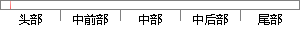

整个项目用MVC框架对程序进行分离解耦，对视图控制器进行优化;
片段位置图

相似结果|
相似片段 1：3.3 集料级配数据实时检测软件总体设计3.3.1 集料级配数据实时检测软件的模型框架设计由于MVC模型框架[27]视图层和业务层分离，当对视图层代码进行更改时模型和控制器的代码不受到影响，所以其有
|
※ 片段修改建议 ※
近似词参考：- 整个：全部
- 程序：法式 步伐
- 进行：举行
- 分离：分手 离散 星散 分散
- 进行：举行
系统自动生成语句：全部项目用MVC框架对法式举行分手解耦，对视图控制器举行优化;
注：本片段修改建议为系统自动生成，仅供参考。